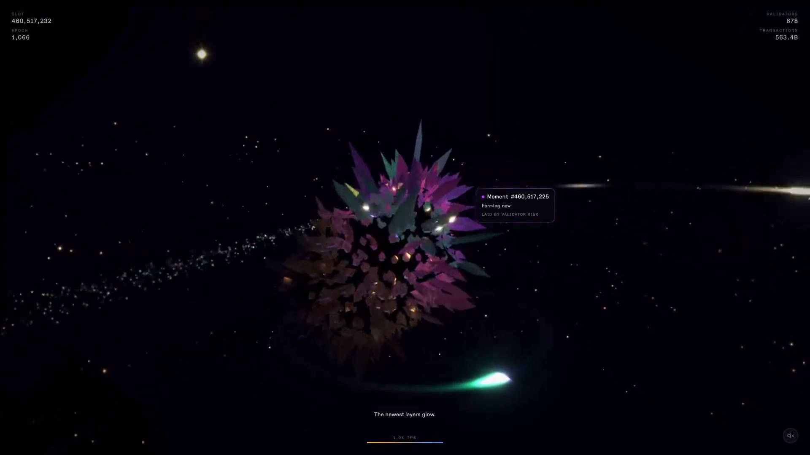
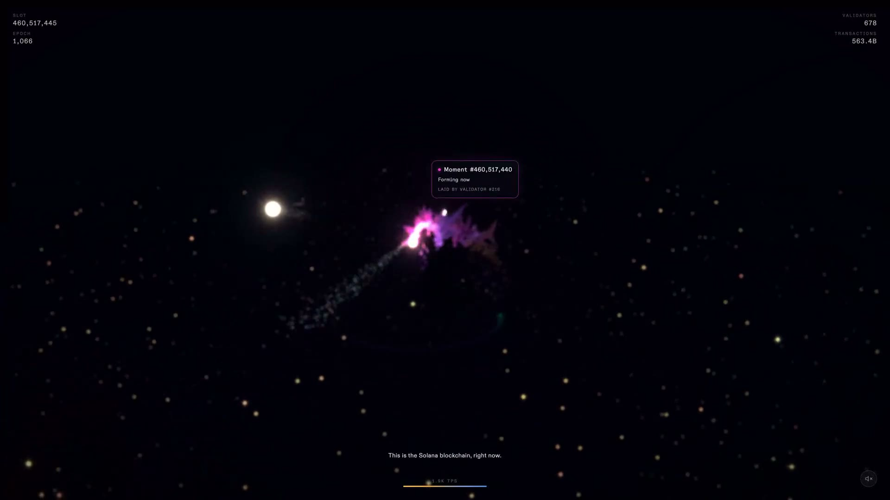
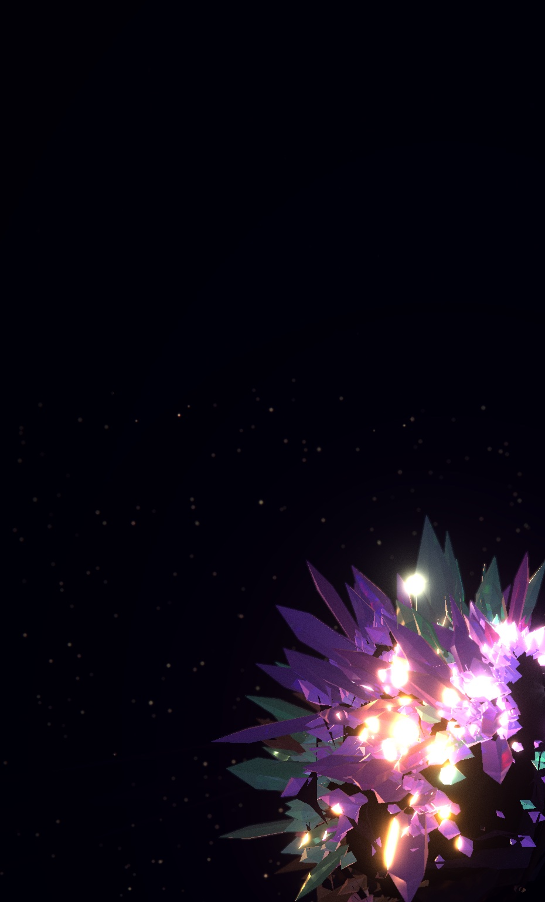

Strata
Lukas Seel, 2026. The Solana network, drawn live as a growing crystal.
The work



- Title
- Strata
- Year
- 2026
- Medium
- Live generative work in the browser, driven by real-time Solana network data
- Materials
- Software; any WebGL-capable screen. First shown at Solana Summit, June 2026
- Dimensions
- Variable; shown on 16:9 screens
- Tools
- Three.js, GLSL shaders, TypeScript, Vite; live data from the Solana network
- Live
- exploresolana.art
The story
Every fraction of a second, thousands of computers around the world agree on what just happened, and a new layer is added to a record that can never be rewritten. Strata shows that happening, live.
It draws the Solana network as a growing crystal. Each point of light is a real validator: a computer, somewhere on Earth, helping keep the network honest. The drifting colour is real activity, money moving, trades, art, stake, streaming through the network this second. With every heartbeat of agreement the crystal grows, and once a layer settles it never changes again.
Nothing in it is invented. It is one of the most intricate machines people have built, and to almost everyone it looks like a price chart. It doesn't have to. I built Strata in the browser with Three.js and GLSL, reading the network live, so that the thing could be seen as it is.
The artist
Lukas Seel is a writer, artist and producer working across literature, performance and digital media. His writing spans drama, poetry, songs and essays. He has written, directed and produced plays, musicals and participatory arts projects, and works with photography, publications and interactive systems. His recent work explores how computational systems change the production and interpretation of culture. He also runs Proof, an autonomous literary publication in which an AI poet and two AI critics publish and argue in public every week at readproof.art; its bound volume is on view at CRASSH, University of Cambridge, until December 2026. Strata was first shown at Solana Summit in June 2026.
See it live: exploresolana.art · More: lookatseel.com